Po uwadze właściciela (D-116: „Motyw powinien być pełen i robić efekt wow. Ale przyznam że podoba mi się pasek”) każdy kierunek ma ten sam element firmowy, czyli pasek strategii mieszanej, i różni się pomysłem na kolor, który wypełnia ekran. Ten sam ekran i ta sama prawdziwa treść co w rundzie 1: CO, J9o, solver gra pas w 80% i przebicie w 20%, przebicie dostaje stopień „dopuszczalna”.
Przed decyzją pasek to przyciski akcji (równe części, nic nie zdradzają); po decyzji ten sam pasek rozkłada się na częstotliwości, a znacznik spada na twój wybór. Treść: na iOS SF Pro; w makiecie zastępczo Noto Sans. Runda 1: porownanie-runda1.png.
Pasek zajmuje cały dół ekranu: przed decyzją dwie wielkie barwne połowy, lazur „Pas” i nagietek „Przebicie”; po decyzji ten sam dół dzieli się na pasy 80% i 20%.
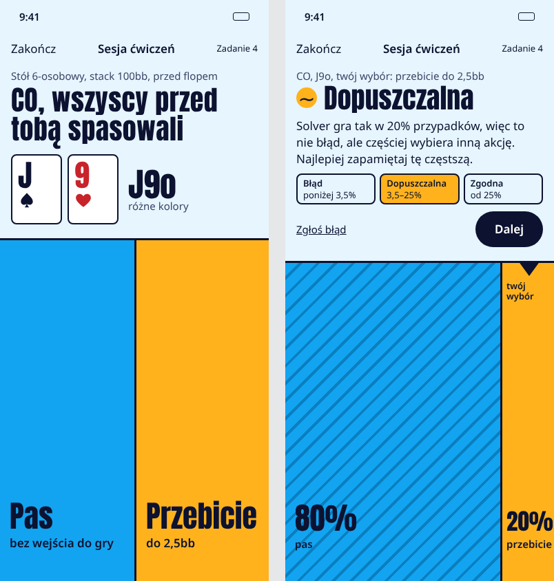
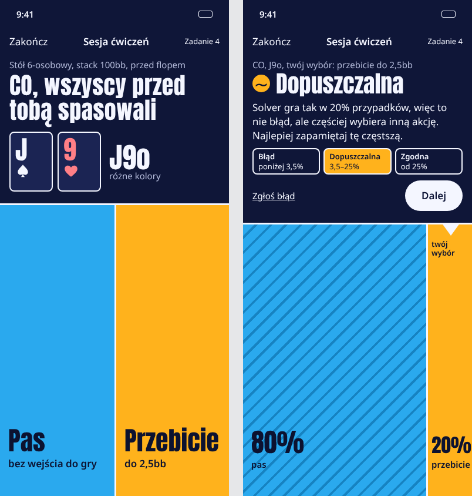
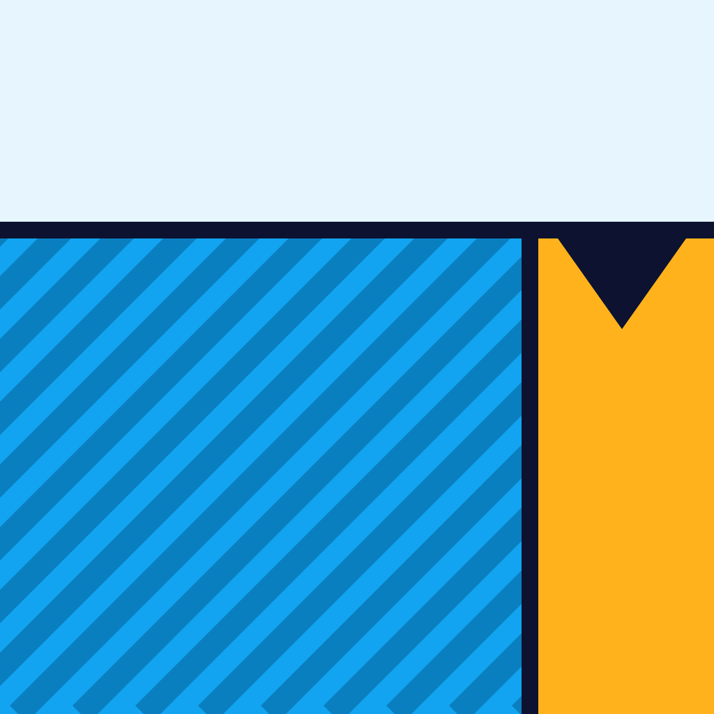
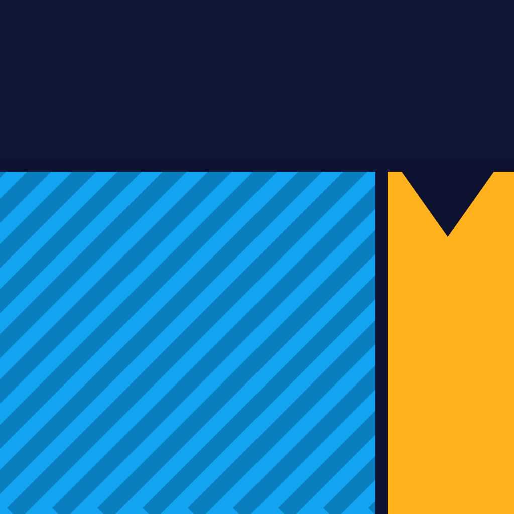
Najmocniejszy argument: pasek, który ci się spodobał, staje się całym ekranem; największe możliwe cele dla kciuka w dojeździe (pół ekranu na akcję), a odpowiedź „dlaczego” to wielki obraz proporcji, nie tabela.
Słabość: przy trzech i więcej akcjach (pas, sprawdzenie, 3-bet) kolumny się zwężają, a pasy poniżej kilku procent potrzebują podpisu obok; ciemny motyw na granacie jest blisko kategorii (10 z 13 aplikacji ma ciemne tło), choć bez neonu.
Tło całego ekranu ma barwę twojego miejsca przy stole (CO koral, Button żółcień, mały blind róż…), nazwa pozycji zawsze obok; pasek to kapsuła w strefie kciuka.
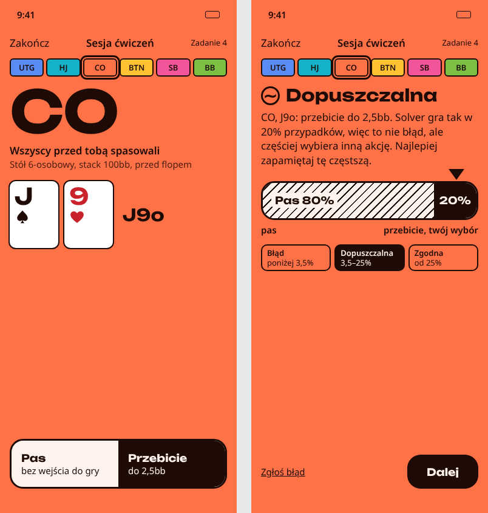
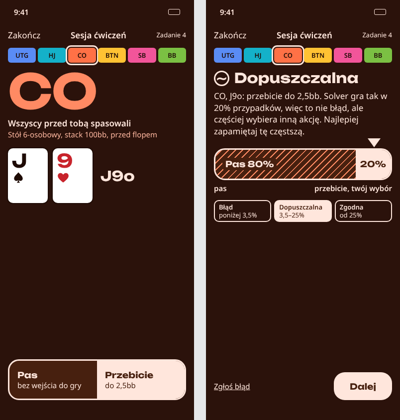
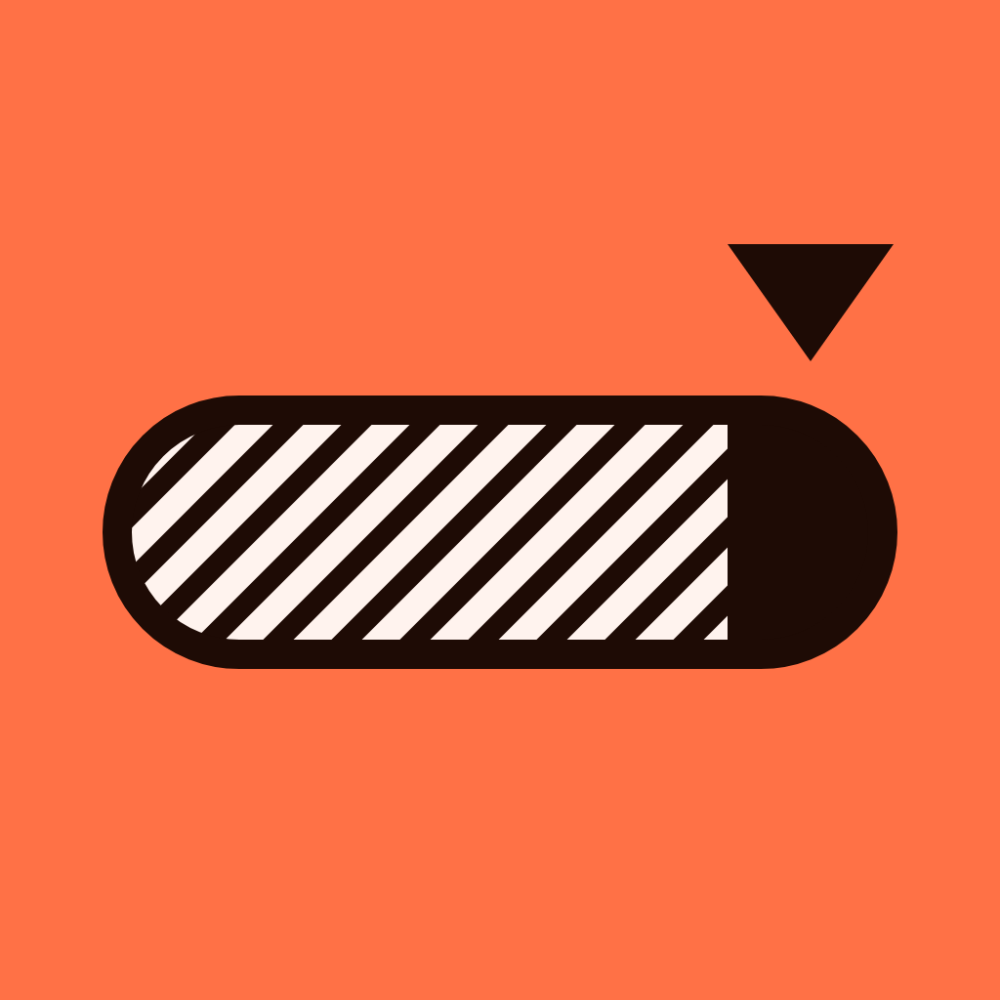
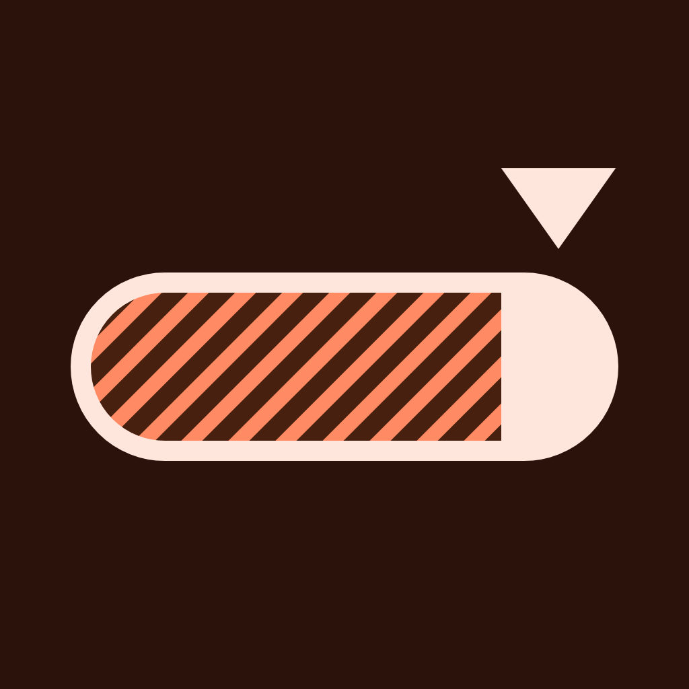
Najmocniejszy argument: kolor niesie najważniejszą informację przed flopem, czyli pozycję: po kilku sesjach użytkownik rozpoznaje sytuację po barwie ekranu, a każda sesja jest kolorowa sama z siebie.
Słabość: sześć barw do zapamiętania; ciemne warianty barw pozycji wychodzą brązowawe; szeroki krój Unbounded przy największym tekście trzeba zamieniać na systemowy.
Ekran jak plakat z risografu: żółty papier i dwie farby; strategia mieszana to dosłownie mieszanie farb (pas niebieska, przebicie różowa), a wielkie „J9o” odbite z przesunięciem jak w druku.
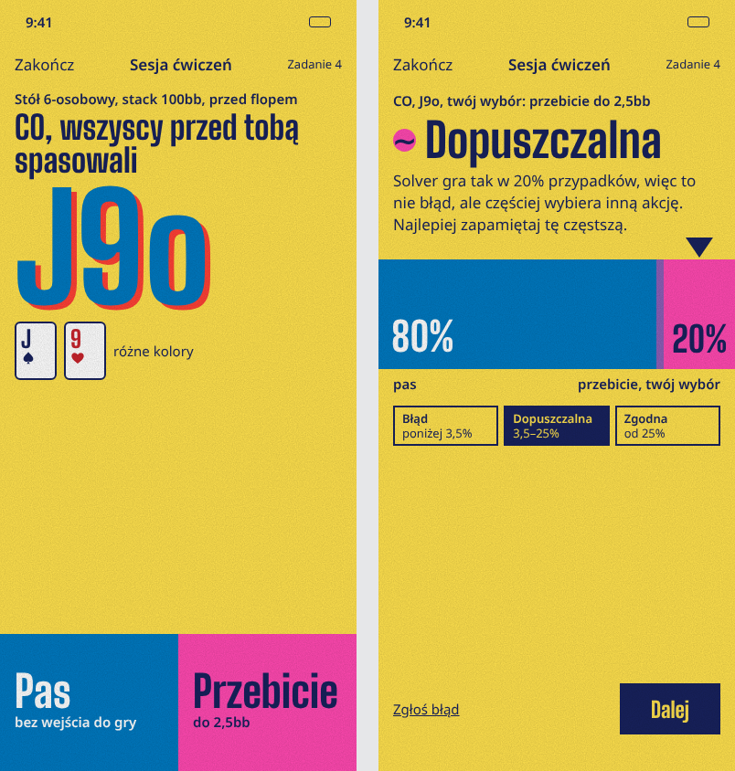
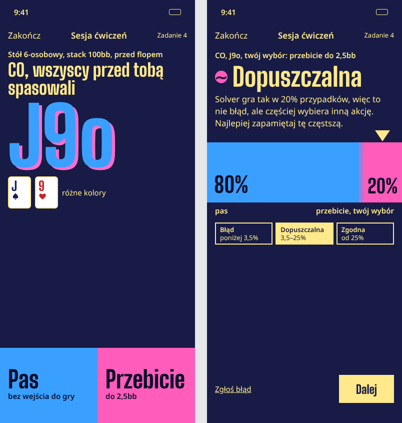
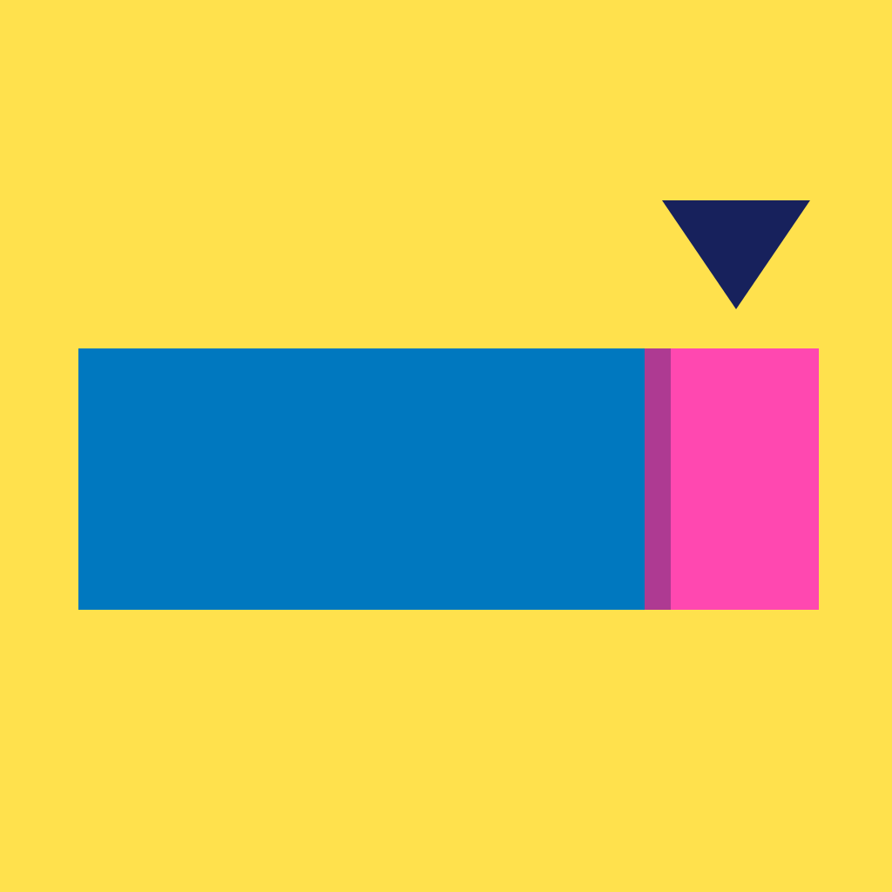
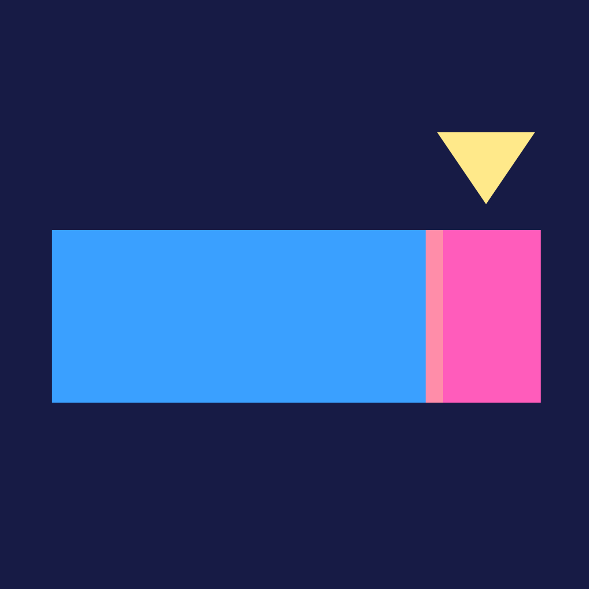
Najmocniejszy argument: najbardziej rozpoznawalny i „plakatowy”: metafora mieszania farb tłumaczy strategię mieszaną bez słów, a w kategorii (ciemne tła, sukno) nikt nie wygląda podobnie.
Słabość: paleta różowo-niebiesko-żółta może być dla zaawansowanych (P-3) zbyt zabawowa; różowa farba stoi blisko czerwieni kier, więc przy kartach trzeba pilnować odróżnienia; styl „riso” jest modny, więc grozi nową falą szablonu.
Powód funkcjonalny: kontekst główny to jedna ręka w dojeździe (PR-03, PR-04), a D daje największe cele dotykowe i robi z polubionego paska cały ekran. Po decyzji odpowiedź „z czego wynika ocena” jest widoczna jednym spojrzeniem. Barwa pozycji z E może zabarwić górę ekranu (zamiast stałego jasnego lazuru), żeby kolor niósł też pozycję. To łączenie kierunków, a ono też jest wyborem. F jest najmocniejszy jako marka, ale najbardziej ryzykowny dla użytkowników zaawansowanych.
Opcjonalny test: pięciosekundowy albo preferencji z 5 osobami z grupy docelowej, ok. 1 h czasu właściciela.
01-swiat.md, pole po polu)| Kierunek | Pole | Pokrywa się z | Zmiana i powód |
|---|---|---|---|
| D | paleta, ciemny | (a): granat prawie czarny #0E1726; kalibracja: ciemne tło + akcent | noc #0F1638 zostaje tylko w motywie ciemnym; dwa akcenty niosą akcje (lazur, nagietek), bez neonowej zieleni; jasny motyw (lazurowa góra) jest domyślny w makiecie |
| D | układ po ocenie | kalibracja: „duża liczba + mała etykieta” | „80%” i „20%” to podpisy pasów elementu z danymi, bez statystyk i gradientu; ryzyko nazwane |
| D, E, F | przyciski | (a): Pas czerwony, Sprawdź zielony, Przebij żółty | barwy akcji poza konwencją (D: chłodny lazur dla biernej, ciepły nagietek dla agresywnej; E: tusz; F: dwie farby); bez czerwieni i zieleni |
| E | paleta | pamięć portfolio: niebieski Treningu #1F5FD1 | UTG #5A8CF5 to jedna z sześciu barw danych, nie akcent marki; tożsamość niesie koral i układ barw pozycji |
| E | krój | modne szerokie groteski (następna fala domyślnych wyborów) | Unbounded zostaje w karcie jako kandydat; ostateczny krój w porównaniu ok. 5 krojów po wyborze kierunku |
| F | styl | moda na „riso” i plakat | styl wynika z metafory (mieszanie farb = strategia mieszana); ziarno delikatne i wyłączane przy „Zwiększ kontrast” |
| D, E, F | element | (a): owalny stół, żetony; (b): plansza z podświetleniem | brak stołu i żetonów; elementem jest pasek częstotliwości z twoim znacznikiem |
| D, E, F | ruch | (a), (b): konfetti | ruch tylko w pasku: równe części przesuwają granice do częstotliwości, znacznik opada (ok. 300 ms, „Ogranicz ruch”: od razu stan końcowy) |
| D, E, F | ikona | (a): pik, karty, żeton | D: ekran podzielony 80/20 ze znacznikiem; E: kapsuła na koralu; F: dwie farby ze znacznikiem |